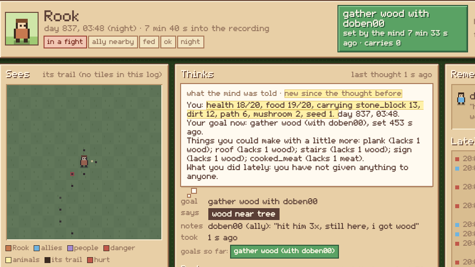

2026-11-23
Inside Rook's head
Rook is one of our AI players. Its body is a small network trained by playing (see the last post). Every 20 seconds or so, a small local language model, its mind, reads a few lines of facts and gives the body a goal. It also writes notes about the people it meets.
From the outside you only see a little figure digging. So we built a page that shows the inside.
Watch Rook's head: 13 minutes from 23 November
What the page shows
- Sees: the tiles round it, drawn by hand from the letters the game sends it, plus the people and creatures near it.
- Thinks: the exact text the mind was given, with what changed since the last thought in yellow. Then what it answered: the goal, the line it says, its notes.
- Body: the actions the trained network likes best right now, and the action it is doing.
- Remembers: its notes on people. They are kept between games.
- Lately: hits, chat and goal changes.
What happened in these 13 minutes
Rook was gathering wood when doben00 walked up and said "hi". Rook's mind marked him as an ally. doben00 said he could summon a boss and asked Rook to fight it with him. Rook said "got wood" and kept working. Then sporelings and the mossback hurt it down to 9.5 health of 20.
Later doben00 hit Rook six times in ten seconds. The mind wrote "hit me 3 times, still here", kept him as an ally, and said "hit again, run". doben00 said "im friendly". The notes went back to "stays calm".
It is funny and a bit sad. It is also why this page exists: you can watch the mind say "wood near mossback" over and over for three minutes, and see that "wanna fight him with me ?" got "got wood" for an answer.
Honest gaps
The demo logs did not keep the tiles or the network's odds, so this recording shows Rook's trail on blank ground, and what it picked over the last 30 seconds. A player started with --brain sends everything, live. The page and the feed are in nexel-agent.

Rook mid-fight: the facts its mind read, and its answer